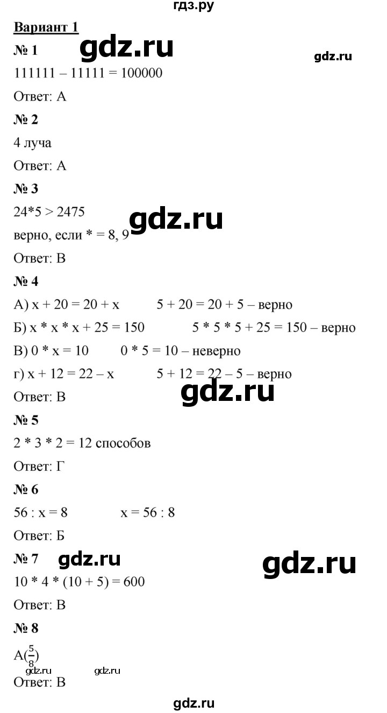
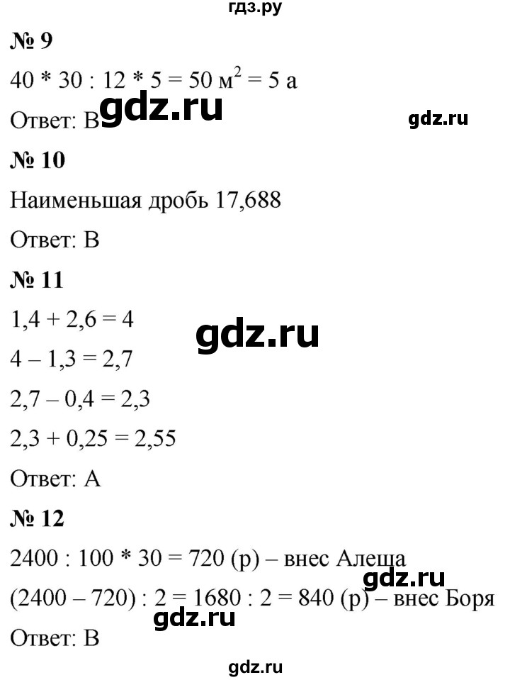
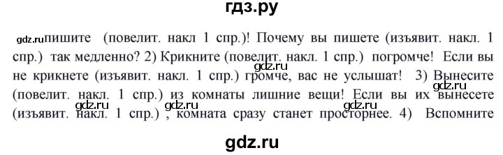
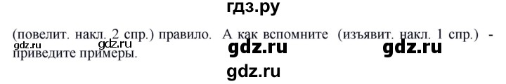

Домашние задания на 18 мая
География
подготовиться к промежуточной аттестации, повторить темы о путешественниках, "Вращение Земли". Принести рабочие тетради на проверку (НЕ на печатной основе), в них должны быть все записи.
Математика
«Проверь Себя» на странице 286.
Ответы


Русский язык
359
Ответы


Литература
Прочитать рассказ Дж. Лондона «Сказание о Кише». СТР. 302, вопрос 3, устно.